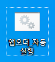
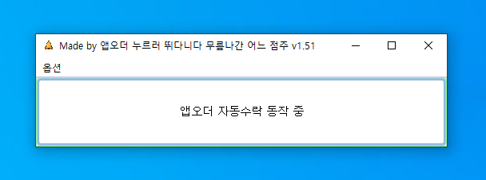
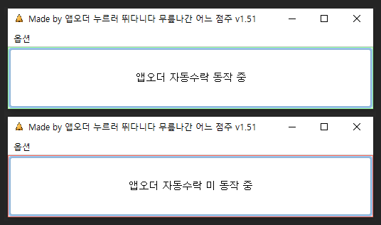
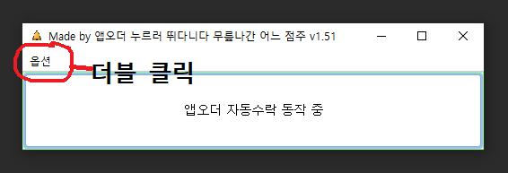
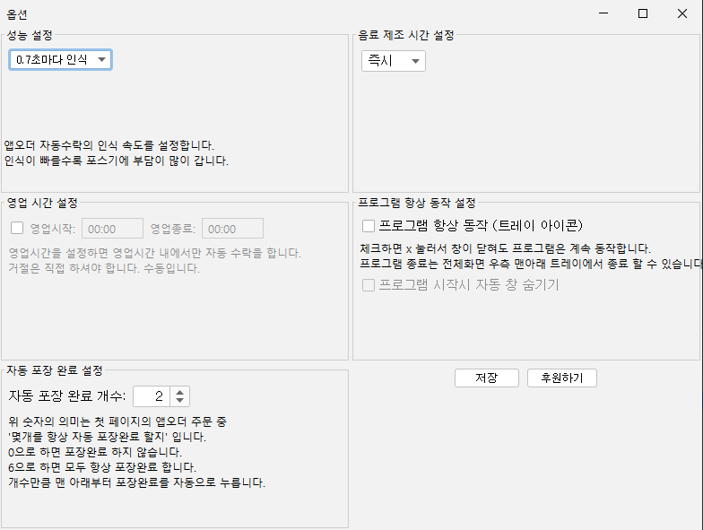

앱오더 자동수락 프로그램
힘들게 포스기까지 뛰어갈 필요 없어요!
자동으로 모든 앱오더 주문을 수락해줘요.
설치 방법
- 프로그램 다운로드
대부분 32bit 버전 다운로드
신규매장 64bit 버전 다운로드Tip: 내컴퓨터(내PC)➝ 우클릭➝ 속성➝ 시스템 종류➝ 32/64 확인
Tip: 두 버전 모두 다운 후 시도해보셔도 됩니다.
- 압축 해제
- 파일에 우클릭 ➝ 압축 풀기 선택
- 파일을 길게 터치하면 우클릭이 됩니다.
- 혹은 파일 더블 클릭 후 압축풀기 클릭
▼(아래 이미지 참조)

- setup 파일 더블클릭

▲ 위 이미지 처럼 나온다면 정상 설치 완료
-
바탕화면에 '앱오더 자동수락' 파일 실행

위 파일 더블클릭
위 이미지처럼 실행되면 확인 완료
사용 방법
[시작 / 정지]

가운데 초록/빨강 테두리 버튼은
▶️(시작) / ⏸️(정지) 기능
[옵션 설정]
옵션 설정 열기
매장에 필요한 설정으로 변경